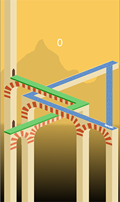
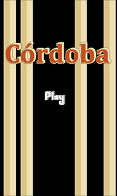
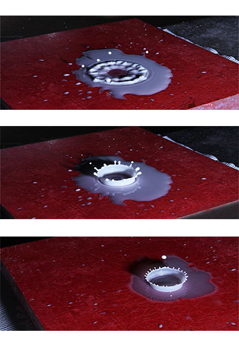
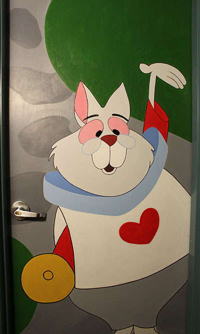
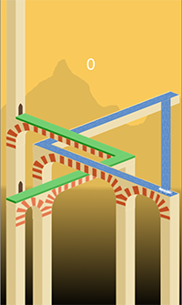
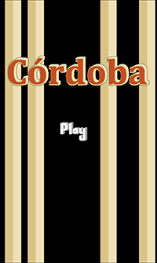
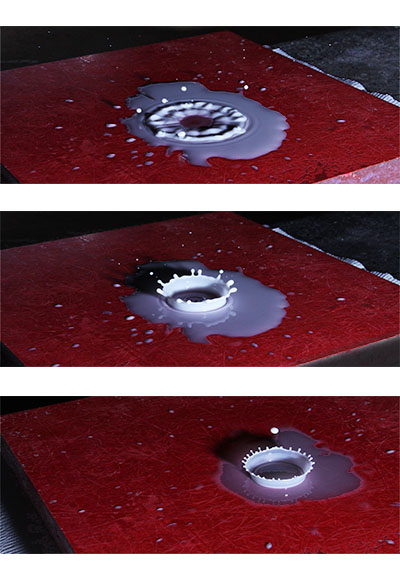
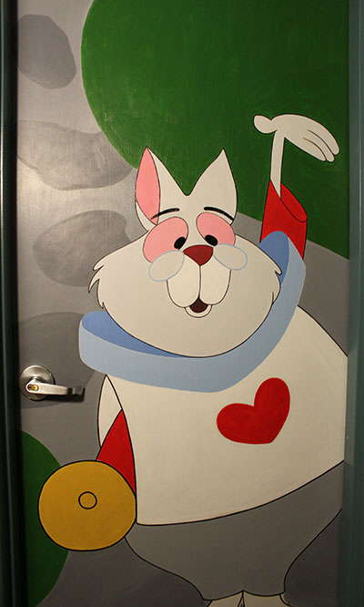

Daniela Carrasco

 







Array of Childhood
My assignment was to use any technological method/apparatus to create a visual image in one of the styles we were learning about in class. I chose to take the wall in my room that I had been working on during the semester and turn it into a form of pop-art. Used Adobe Illustrator.
Dexters Laboratory
Explored how to create a rich visual sense of 3D space using the seemingly-limiting set of tools scratch offers. I made a short video recreating a cartoon network cartoon from the 90's Dexters Laboratory . Hand sketched the characters and animated using frame-by-frame method. Used Scratch.
Cordoba
Final project for 6.670 iOS Game Development . Designed/Created iOS infinte runner game. Game Description: Run, swim, jump, and dive on impossibly endless triangles inspired by The Great Mosque of Cordoba. Used Objective-C, SpriteBuilder and GIMP.
Photography
I often turn to photography to capture scenes I find beautiful as well as moments I find memorable. Mostly a hobby but some of my photos are also part of my EC.310 Creative Imaging More Photos
Personal Projects
I find sketching and painting very relaxing and enjoyable. The white rabbit on my door is my latest personal project.
More Sketches/Murals